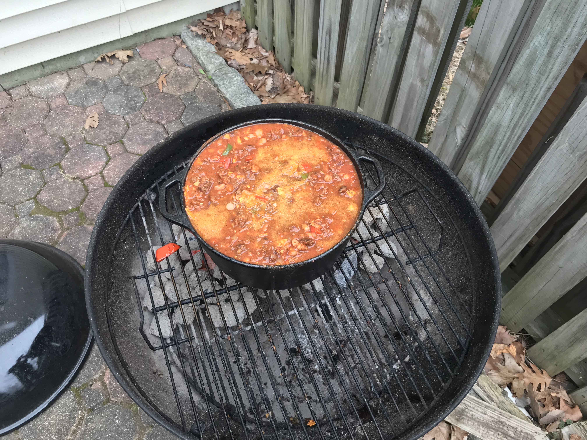

Beef Chili

Description
Chili that's easy to make with great flavor
Make it on the stove or the grill to add that extra smokey flavor
Add whatever you like to make it your own!
Ingredients
- 2lbs of ground beef
- 1 large can of tomato puree
- 1 large can of diced tomatoes
- 1 can of kidney beans
- 1 can of pinto beans
- 6 chorizo chicken sausage links
- a bottle of your favorite beer
- 1 large bell pepper
- 1 large onion
- 2 habanero peppers
- 3 jalepeno peppers
- dark chili powder
- cummin
- corn tortilla chips
- ground pepper
- garlic powder
- onion powder
Recipe
- Form ground beef into burger sized paddies and grill just enough to char the outsides
- Grill chorizo sausages, again just looking for char
- chop onion and pepers while waiting
- warm a large pot with oil in the bottom on medium high heat, add pepers and onion when warm, cooking for about 5 minutes
- mix chili powder with cummin, ground pepper, garlic and onion powder - roughly a cup of chili powder and 2 tbs of the others
- add tomatoe puree and diced tomatoes to your pot, bringing to a light simmer
- add beef and sausage, use a potatoe masher to mash up into pieces
- add your mixed chili spices
- crush up roughly a large handful of corn tortilla chips and add to the pot, along with your can of beer
- cook on medium heat with the lid on for about an hour, stirring once or twice
- cook without lid for another hour or until your desired thickness is achieved